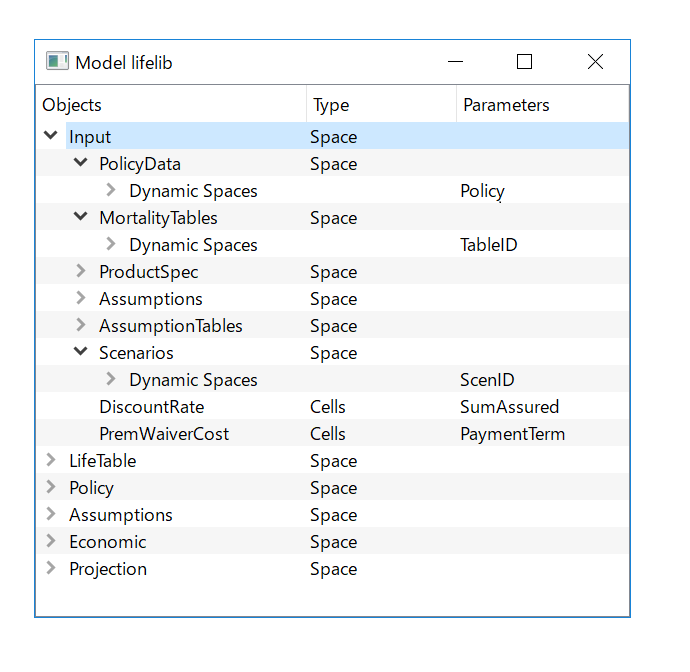

{% assign feature_page = site.pages | where: "name", "features.md" | first %}

<div class="container">
    <div class="row">
        <div class="col-md-6">
            <h2 class="header-light regular-pad">What is <strong>modelx</strong>?</h2>
              <p class="lead">modelx is an open-source calcultaion tool.
              With modelx, you can build object-oriented numerical models,
              such as actuarial or financial models,
              just by creating model components and writing formulas in Python.
              modelx is as versitile as spreadsheets,
              and is equipped with rich features like formula dependency tracing.
              modelx is as elegant as Python,
              and it embodies object-oriented mechanisims, such as composition and inheritance.
              See <a href="#features">features</a> for more details.
              </p>
              <p class="lead">
              modelx is used by
              <strong><a href="https://lifelib.io">lifelib</a></strong>,
              an open-source library of life actuarial models.
              </p>
              <p class="small">
                modelx is in its active development stage, and its spacifications
                are subject to changes.
              </p>
        </div>
        <div class="col-md-6 text-center">
            
        </div>
    </div>

    <div class="row">
        <div class="col-sm-2">
                <h2 class="text-center"><a href="{{ site.posts.first.url | prepend: site.baseurl }}"><i class="fa fa-pencil" aria-hidden="true"></i></a></h2>
                <h3 class="text-center"><a href="{{ site.posts.first.url | prepend: site.baseurl }}">Blog</a></h3>
        </div>
        <div class="col-sm-2">
                <h2 class="text-center"><a href="https://lifelib.io/download.html"><i class="fa fa-cloud-download" aria-hidden="true"></i></a></h2>
                <h3 class="text-center"><a href="https://lifelib.io/download.html">Download</a></h3>
        </div>
        <div class="col-sm-2">
            <h2 class="text-center"><a href="https://docs.modelx.io/en/latest/tutorial/index.html"><i class="fa fa-graduation-cap" aria-hidden="true"></i></a></h2>
            <h3 class="text-center"><a href="https://docs.modelx.io/en/latest/tutorial/index.html">Tutorial</a></h3>
        </div>
        <div class="col-sm-2">
            <h2 class="text-center"><a href="https://docs.modelx.io"><i class="fa fa-book" aria-hidden="true"></i></a></h2>
            <h3 class="text-center"><a href="https://docs.modelx.io">Documents</a></h3>
        </div>
        <div class="col-sm-2">
            <h2 class="text-center"><a href="https://lifelib.io"><i class="fa fa-bar-chart" aria-hidden="true"></i></a></h2>
            <h3 class="text-center"><a href="https://lifelib.io">lifelib</a></h3>
        </div>

    </div>

    <hr>
    <h2 class="text-center"><a href="{{site.baseurl}}{{feature_page.url}}"><i class="fa fa-bolt" aria-hidden="true"></i></a></h2>
    <h2 align="center" id="features"><a href="{{site.baseurl}}{{feature_page.url}}">Features</a></h2>

    {% for row_idx in (0..2) %}
    <div class="row">

        {% for col_idx in (0..2) %}
        {% assign idx = row_idx | times: 3 | plus: col_idx %}
        {% if idx >= feature_page.features.size %}
        {% break %}
        {% endif %}
        {% assign feature = feature_page.features[idx] %}
        {% assign slug = feature.title | slugify %}
        {% assign feature_url = site.baseurl | append: feature_page.url | append: "#" | append: slug %}
        <div class="col-sm-4">
            <h3 class="text-center"><a href="{{ feature_url }}">{{feature.title}}</a></h3>
            <p>{{ feature.intro }} <a href="{{ feature_url }}">Read More>></a></p>
        </div>
        {% endfor %}

    </div>
    {% endfor %}
    <hr>
</div>
